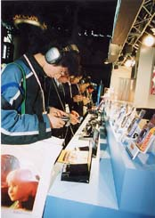
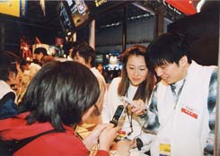
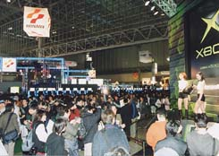

|

21世紀を迎えて、多種多様に進化し続けるコンピュータゲーム ＜結び＞
「東京ゲームショウ2001春」は、2001年4月1日午後5時、3日間の会期を終えました。 今やコンピュータゲームは単なる娯楽の域を越え、全く新しい文化のひとつとして進化を続けています。
この、日本が世界に誇る文化の担い手が、一同に会した3日間。新しいハードの発表など、大きな話題もありました。来場者の皆様には、それぞれにエキサイティングな感動を味わっていただけたことだと思います。
次回「東京ゲームショウ2001秋」でまたお会いできることを、心からお待ちしております。
＜次回開催予定＞10月12日（金）・13日（土）・14日（日）

会場では携帯ゲーム機やネットワークが注目されました
|

TVゲームだけでなく、携帯電話など新しいスタイルのゲームも登場しました |

新ハードの発表はいつもセンセーショナルです |
|
|

掲載された画像その他の内容の無断転載はお断りいたします。
当ホームページで公開された商品名は一般に各社の登録商標です。
|

|
|